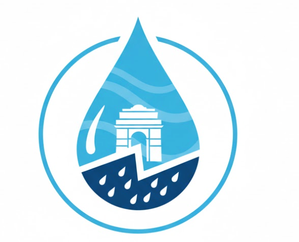

Urban Rain Resilience System (URRS)
Home
Live Map
Reports
Safety Guidelines
Rainfall Warnings
Login / Register
Live Statistics
12
Active Reports
5
Severe
4
Moderate
3
Low
Filter by Severity
All Reports
🔴 Severe Only
🟡 Moderate Only
🟢 Low Only
Historical Data
Show Historical Hotspots
Legend
Severe Waterlogging (Report)
Moderate Waterlogging (Report)
Low Waterlogging (Report)
Historical Hotspot